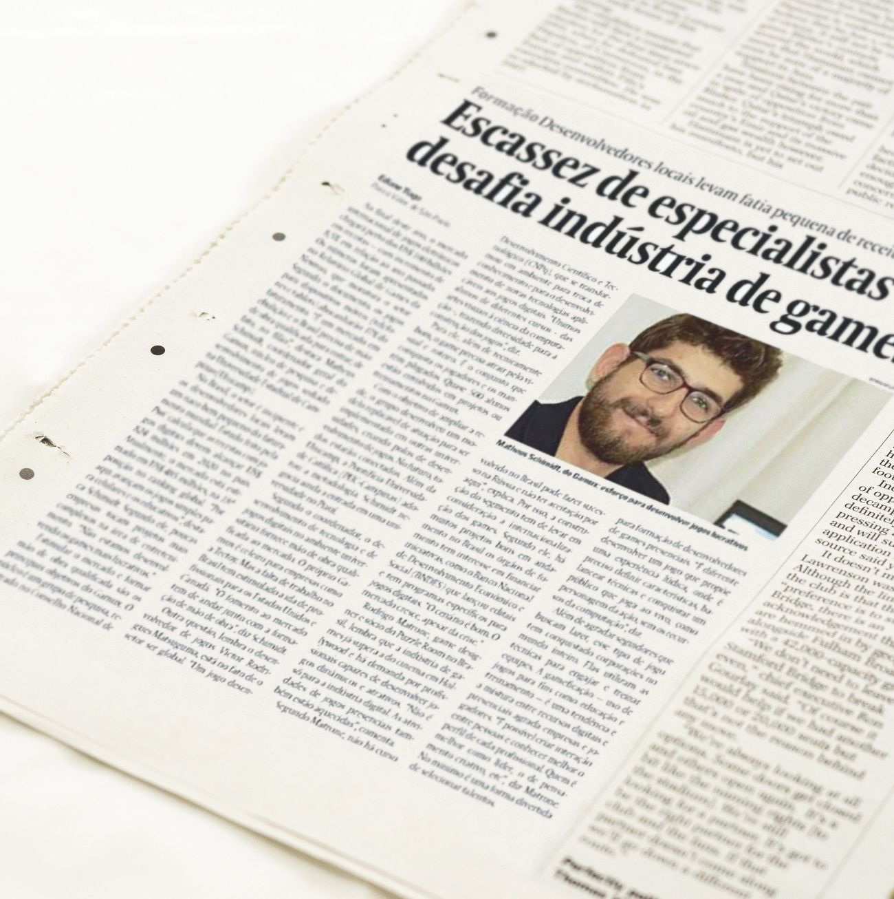

O Gamux é um núcleo de pesquisa e desenvolvimento de jogos cadastrado pelo CNPQ e sediado na Universidade Estadual de Campinas.
Temos por principal objetivo o desenvolvimento de novas tecnologias aplicáveis a jogos digitais, bem como estabelecer um ambiente propício para a troca de conhecimentos.
PROJETOSRealização de projetos relacionados ao desenvolvimento de jogos digitais. |

PESQUISASRelacionando novas tecnologias aplicadas a jogos e suas possíveis implicações para a sociedade. |

EVENTOSOrganização de game Jams, palestras e workshops relacionados ao desenvolvimento de jogos. |
|---|
|

Em agosto, o Gamux concedeu uma entrevista ao jornal Valor Econômico, sobre o mercado de jogos brasileiro. A entrevista pode ser lida em sua íntegra no site do Valor, através do portal do assinante.
|
Em setembro, o Gamux participou efetivamente do evento SBGAMES 2016 - tendo um jogo selecionado entre os 100 melhores, e um artigo selecionado para a exposição.
|
|---|

|

|
|---|
 Em agosto de 2016, o Gamux iniciou importante parceria com o Centro de Convivência de Afásicos (CCA) - no IEL Unicamp. O objetivo é desenvolver um jogo que possa trabalhar questões relativas à linguagem. O projeto está em execução.
Em agosto de 2016, o Gamux iniciou importante parceria com o Centro de Convivência de Afásicos (CCA) - no IEL Unicamp. O objetivo é desenvolver um jogo que possa trabalhar questões relativas à linguagem. O projeto está em execução.